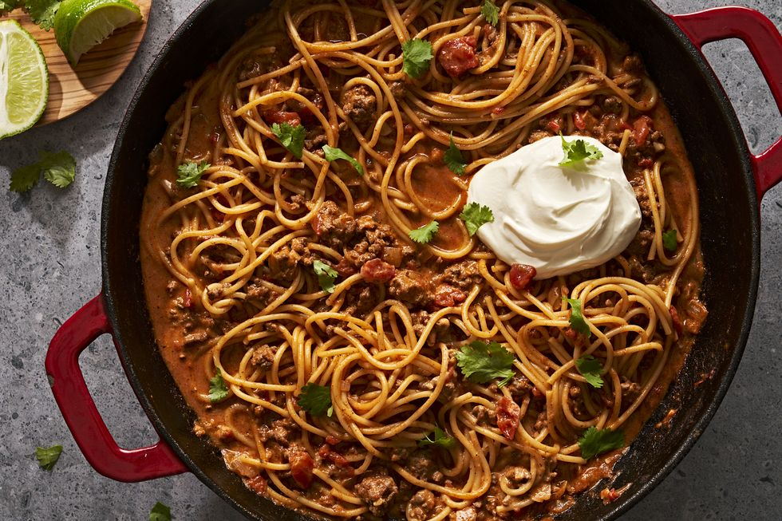

Taco Spaghetti

Description:
This one-pot taco spaghetti is a fast and easy dinner idea. It combines the best of both worlds, using your favorite taco fixin's with spaghetti noodles rather than taco shells.
Ingredients:
- 1lb. 93% lean ground beef
- 1 small yellow onion, finely chopped
- 4 cloves garlic, finely chopped
- 4 c. water
- 1 (14.5-oz. can) diced tomatoes, preferably Rotel
- 1 (1-oz.) packet or 2 tbsp. taco seasoning
- 8 oz. spaghetti
- 4 ox. Velveeta cheese or American cheese, cut or torn into pieces
- 1 c. (4oz). sharp cheddar cheese, shredded
- 1/2 c. chopped fresh cilantro, plus more for serving
- Sour cream or Mexican crema, for serving (optional)
Steps:
- In a large pot over medium-high heat, cook ground beef, onion, and garlic, stirring occasionally, until beef is browned, 5 to 6 minutes. Add water, tomatoes, and taco seasoning, then cover and bring to a boil.
- Break spaghetti in half lengthwise and add to sauce. Reduce heat to medium, cover, and simmer until pasta is tender, 12 to 14 minutes.
- Remove from heat and stir in Velveeta, cheddar, and cilantro until cheese is melted. Serve topped with more cilantro and sour cream, if using.